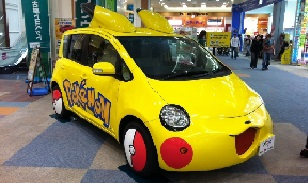

Etimología
La palabra Pokémon es la contraccon romanizada de la marca Pocket Monsters(ポケットモンスター Poketto Monsutā?,literalmente "monstruos de bolsillo"),como tales contracciones son muy comunes en Japón
En inglés, la palabra se escribe Pokémon con tilde en acento agudo, a pesar de que este signo no existe en el uso habitual de este idioma. Esto se debe a que al unir las palabras Pocket Monster se obtuvo Poke-Mon. El problema es que, según normas del inglés, esto se pronunciaría como pouk mon. En muy pocos otros casos (como maté que se pronuncia /mátei/ y quiere decir mate) se puede poner en inglés un acento en la "e" para que ésta se pronuncie, resultado así el nombre "Pokémon". En español se puede usar la transcripción romaji que prescinde del acento por razones ortográgicas, si bien es el uso comercial habitualmente aparece ussando tilde.
Sobre la pronunciación de los hispanohablantes en el caso de América Latina, por el doblaje del anime, que suele ser más cercano al esdadounidense, se pronuncia /pokemón/. En España se pronuncia /pokemon/.
El término Pokémon, además de referirse a la franquicia en sí, puede aludir colectivamente a las 721 especies ficticias que han aparecido en los diversos medios de la franquicia.Como marca registrada es invariable: los Pokémon. Como voz lexicalizada, ya escrita en minúscula y sin tilde, si nos atenemos a su pronunciación original, pluralizaría según la RAE en -es: los pokémones
IMAGEN DE COCHE DECORADO COMO UN POKÉMON